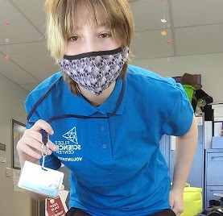
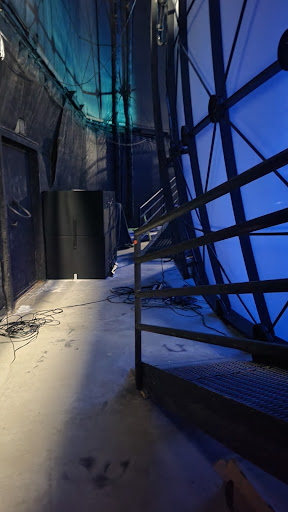

Behind the IMAX: My Internship at the Fleet Science Center

Hi! I'm Katelyn Olsen, a student at High Tech High Media Arts in the 11th grade. My high school does an internship program where for a month we leave campus and do internship work for other organizations. It can be a changing and great experience! Whether you want to get a taste for what life after school will be like, or figure out if the career path you want to do is actually for you, you can experience a variety of positions and places. Even ones you may not have considered or seem out of your current skill level. I'm doing my internship with the Education Department at the Fleet Science Center in Balboa Park. I’m very happy with my choice!

I've been going to the Fleet Science Center my whole life, and Balboa Park is a staple of my childhood. I wanted to get behind the scenes and give other people the magic and thought-invoking time I had. The best activities are the ones you learn something from. Currently I am specifically interested in environmental science, including specifically genetic modification and selective breeding. Our exhibits are always a really great place to learn more. While guiding a school group with Pat, a long-time educator, through the So Watt! An Illuminating Look At Energy exhibit I learned quite a bit. I got to exercise my creativity and problem solving skills in discussions about energy waste and production. One idea that popped into mind was that San Diego has lots of beaches which are always extra windy. Why not put windmill farms on the less inhabited beaches and oceansides? Maybe even trying to generate power utilizing the always moving tides. Even though these things have most certainly been thought of by professionals and aren't being used for reasons or are already being used, I think it is important to try coming up with ideas and exercising your problem solving skills no matter how silly you think the thought may be. I seemed more into the exhibit than most of the kids, but I loved seeing them when curiosity was sparked. I love working with student groups because I enjoy hearing the intrigue and ideas of someone who is also learning. Granted, nobody ever stops learning! I love to see the genuine reactions of people when they see science in action. I want to learn how to better engage people and get them interested in subjects, no matter how big or small.
Another part of my internship is working with classes that do School In the Park (SITP), a program that partners schools with the Balboa Park institution. SITP is a program where a school comes in for a full week to do a set curriculum among the museums and centers here. They were learning about chemistry, molecular movement, and temperature. I got to experience cabbage juice PH indicators again, something which I did in school with High Tech High. It was really cool and I hope the kids learned something from it. The Fleet also offers school workshops, which are one day activities. A school comes in, learns something, and does a hands-on activity or workshop. It's a nice hands-on way to get out of the class and do some science. I worked with an elementary school for a detective workshop and they got to match fingerprints, examine hairs under a microscope, and test mystery powders and their reactions with a universal indicator, iodine, and vinegar. Visiting schools can also experience the IMAX, which I totally got to see behind the screen and see the inner-workings! It shows a variety of awesome documentaries. Not included for schools, you can see Hollywood movies in the one-of-a-kind dome theater, but I'm personally much more jazzed about the documentaries.
It's really cool doing work and activities that aren't just for the sake of work. I get to contribute to something meaningful. I recommend students go for something they're passionate about and would do as a volunteer and not just for being paid. For me, that's here at the Fleet being around people who want to learn and engage in science and make change!
Related Articles

Reflections from a Distance Learning Hubs educator.
"Now more than ever, it is easier for not only children, but all of us to apply STEAM Education in real life applications."
By Jasmine L. Sadler, The STEAM Collaborative CEO+Visionary

Marina is a research scientist at InhibRx. She grew up watching her grandparents work as pharmacists and immediately knew that she also wanted to dedicate herself to helping people.

Meet Elizabeth, she is a park ranger in Muir Woods whose job includes habitat restoration and ecosystem services, as well as giving tours to park visitors to teach them about the natural world.

Alba is an acoustic ecologist at Scripps Institution of Oceanography. Her hobbies include climbing and surfing, but the list of passions that define her goes much further.